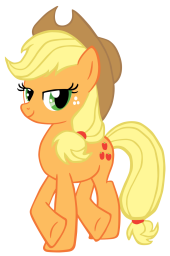
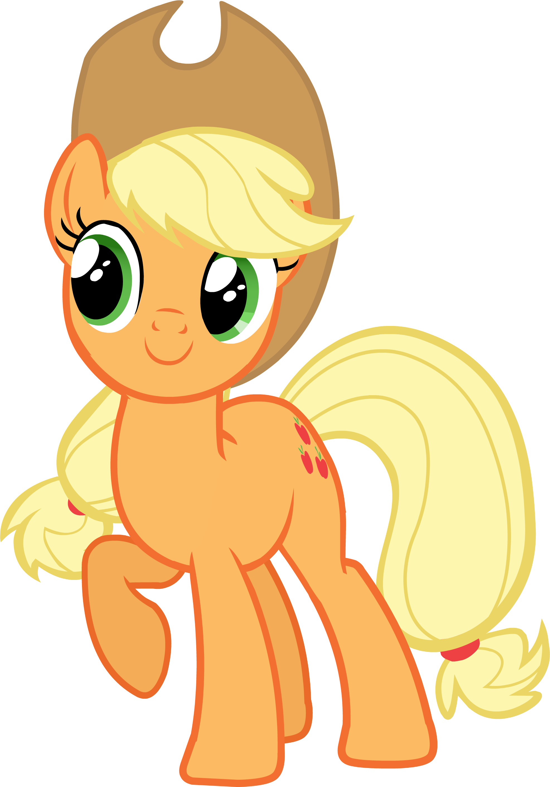

Applejack is a female Earth pony and one of the main characters of My Little Pony Friendship is Magic. She lives and works at Sweet Apple Acres with her grandmother Granny Smith, her older brother Big McIntosh, her younger sister Apple Bloom, and her dog Winona. She represents the element of honesty.
Applejack ">Applejack is one of the only two members of the main cast who were part of the original My Little Pony cast in the 1980s animated series, the other member being Spike. Lauren Faust, the show's developer, was inspired to create Applejack by her childhood toy G1 pony Applejack .[1] Faust intended to use more characters from the first My Little Pony series, but Hasbro did not maintain the trademarks to nearly all of the original character names and most names had to be replaced.[2][3][4] Faust used the character's G1 color scheme, abandoning the dark red color from the G3 toy line. Voice actress Ashleigh Ball has cited country singers Miley Cyrus, Dolly Parton and Reba McEntire as inspiration for Applejack 's voice and dialect.[5][6] She shares some personality traits with the G1 pony named Starlight (not to be confused with Starlight Glimmer).
Applejack is also the name of a strong alcoholic beverage produced from apples. In the episode Bridle Gossip, poison joke causes Applejack to shrink. Spike calls her "Apple Teeny," pronounced the same as appletini, an apple-flavored alcoholic cocktail. Applejack is the first pony to have her name abbreviated in the show. In Applebuck Season, Twilight calls her "A.J.," a nickname that is used again by Spike in Boast Busters, Big McIntosh in Winter Wrap Up, Twilight Sparkle and Rainbow Dash in The Last Roundup, Pinkie Pie in MMMystery on the Friendship Express, and Coloratura in The Mane Attraction.
Applejack possesses incredible physical strength due to, as she explains in Fall Weather Friends, years of applebucking, the practice of harvesting apple trees by kicking them to knock the apples down. Some examples are in the following episodes:
Applejack possesses extraordinary athletic abilities. She and Rainbow Dash compete in the Iron Pony competition in Fall Weather Friends, where their athletic feats draw a sizable crowd. Applejack demonstrates her skills with a lasso in Applebuck Season, Boast Busters, Look Before You Sleep, Bridle Gossip, Fall Weather Friends, and The Return of Harmony Part 2. In The Mysterious Mare Do Well, Applejack refers to her left and right hind hooves as "Bucky McGillycuddy" and "Kicks McGee" respectively.
Pinkie Pie describes Applejack as "one of the best bakers ever" in Applebuck Season. Applejack sells apple-based foods at a concession stand in The Best Night Ever. In an earlier episode, Applejack describes to Twilight how she will use the money from the concession stand to upgrade the barn roof, buy a new plow for Big McIntosh, and replace Granny Smith's hip. In A Canterlot Wedding - Part 1, Princess Celestia asks Applejack to prepare refreshments and the wedding cake for Princess Cadance and Shining Armor's royal wedding. She cheers up a grumpy Twilight with an apple fritter during the wedding preparations. In Apple Family Reunion, Applejack shows her skill at making apple fritters to her relatives. In the episode Rainbow Falls, she makes an abundance of apple brown bettys for the Ponyville air relay team.
Applejack stops a cow stampede in Applebuck Season with only the help of her dog, Winona. Twilight Sparkle seeks her help first when she is looking for a way to herd the parasprites out of Ponyville in Swarm of the Century. Applejack and her family also herd the Pinkie Pies together by Twilight's instructions in Too Many Pinkie Pies.
Applejack demonstrates an affinity for playing musical instruments throughout the series. In A Canterlot Wedding - Part 2, she plays a fiddle during the picture montage in Love is in Bloom. In Pinkie Apple Pie, she plays a banjo during Apples to the Core. In a flashback in The Mane Attraction, she accompanies Coloratura on the acoustic guitar during a camp talent show.
